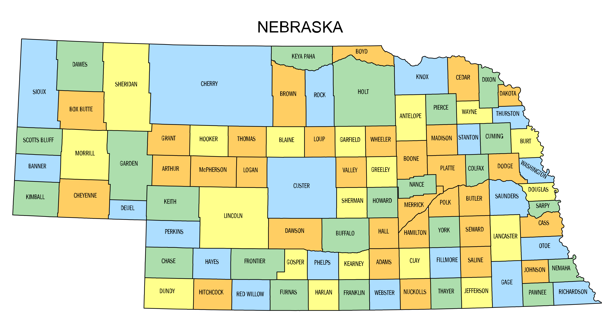

Contrary to what many people would say, there is an incredible amount of diversity across Nebraska and her many unique counties. From the Sandhills of Box Butte County to the fields of Hall County, there is plenty to see.
Below is a map of Nebraska's many counties.
Burt, Cass, Dodge, Douglas, Otoe, Nemaha, Richardson and Washington Counties was the original 8 counties created on November 23, 1854. This was 13 years before Nebraska even became a state. They are all counties on the eastern side of Nebraska, as that was the area first settled.
Garden County was formed in 1909 by popular vote. Voters in the general election of November 2, 1909 approved making the northern part of Deuel County into its own county. It is said the county was so named in the hope that this land should become the garden of the West or with allusion to the "Garden of Eden".
| County | Seat | Plate Number |
|---|---|---|
| Adams | Hastings | 14 |
| Antelope | Neligh | 8 |
| Arthur | Arthur | 89 |
| Banner | Harrisburg | 91 |
| Blaine | Brewster | 63 |
| Boone | Albion | 16 |
| Box Butte | Alliance | 3 |
| Boyd | Butte | 14 |
| Brown | Ainsworth | 29 |
| Buffalo | Kearney | 25 |
| Burt | Tekamah | 15 |
| Butler | David City | 32 |
| Cass | Plattsmouth | 14 |
| Cedar | Hartington | 16 |
| Chase | Imperial | 44 |
| Cherry | Valentine | 20 |
| Cheyenne | Sidney | 25 |
| Clay | Clay Center | 22 |
| Colfax | Schuyler | 15 |
| Cuming | West Point | 4 |
| Custer | Broken Bow | 56 |
| Dakota | Dakota City | 29 |
| Dawes | Chadron | 54 |
| Dawson | Lexington | 16 |
| Deuel | Chappell | 39 |
| Dixon | Ponca | 10 |
| Dodge | Fremont | 19 |
| Douglas | Omaha | 1 |
| Dundy | Benkelman | 45 |
| Fillmore | Geneva | 41 |
| Franklin | Bloomington | 48 |
| Frontier | Stockville | 23 |
| Furnas | Beaver City | 47 |
| Gage | Beatrice | 2 |
| Garden | Oshkosh | 78 |
| Garfield | Burwell | 77 |
| Gosper | Elwood | 46 |
| Grant | Hyannis | 88 |
| Greeley | Greeley | 81 |
| Hall | Grand Island | 33 |
| Hamilton | Aurora | 5 |
| Harlan | Alma | 35 |
| Hayes | Hayes Center | 80 |
| Hooker | Mullen | 72 |
| Howard | St. Paul | 47 |
| Jefferson | Fairbury | 8 |
| Johnson | Tecumseh | 33 |
| Kearney | Minden | 53 |
| Keith | Ogallala | 69 |
| Keya Paha | Springview | 58 |
| Kimball | Kimball | 66 |
| Knox | Center | 18 |
| Lancaster | Lincoln | 2 |
| Lincoln | North Platte | 16 |
| Logan | Stapleton | 72 |
| Loup | Taylor | 42 |
| McPherson | Tryon | 71 |
| Madison | Madison | 45 |
| Merrick | Central City | 57 |
| Morrill | Bridgeport | 65 |
| Nance | Fullerton | 45 |
| Nemaha | Auburn | 44 |
| Nuckolls | Nelson | 36 |
| Otoe | Nebraska City | 11 |
| Pawnee | Pawnee City | 70 |
| Perkins | Grant | 82 |
| Phelps | Holdrege | 44 |
| Pierce | Pierce | 30 |
| Platte | Columbus | 11 |
| Polk | Osceola | 67 |
| Red Willow | McCook | 39 |
| Richardson | Auburn | 44 |
| Rock | Bassett | 84 |
| Saline | Wilber | 44 |
| Sarpy | Papillion | 5 |
| Saunders | Wahoo | 2 |
| Scotts Bluff | Gering | 65 |
| Seward | Seward | 15 |
| Sheridan | Rushville | 69 |
| Sherman | Loup City | 48 |
| Sioux | Harrison | 71 |
| Stanton | Stanton | 47 |
| Thayer | Hebron | 80 |
| Thomas | Thedford | 78 |
| Thurston | Pender | 24 |
| Valley | Ord | 70 |
| Washington | Blair | 30 |
| Wayne | Wayne | 38 |
| Webster | Red Cloud | 59 |
| Wheeler | Bartlett | 68 |
| York | York | 12 |